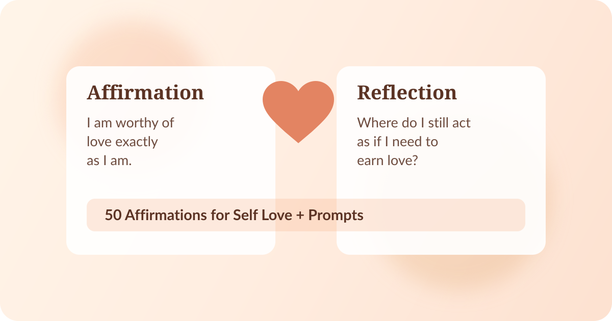

Most lists of affirmations for self love stop at the quote. But reading words is only step one. Real change happens when you ask a better question right after the affirmation.
Use this guide as a daily ritual: read one affirmation, then answer the paired reflection prompt in one to three sentences. These self love reflection prompts are designed to help you make each statement personal, believable, and actionable.

How to Use This List
Pick one pair each morning or evening. If a line feels uncomfortable, that is often the one worth journaling on. Focus on honesty, not perfect positivity.
50 Affirmations for Self Love + Reflection Prompts
1-10: Foundations
1
AffirmationI am worthy of love exactly as I am.
Reflection promptWhere in my life do I still act as if I need to earn love?
2
AffirmationMy needs matter.
Reflection promptWhich need have I been minimizing lately?
3
AffirmationI can speak to myself with kindness.
Reflection promptWhat did my inner voice sound like today?
4
AffirmationI deserve rest without guilt.
Reflection promptWhat belief makes rest feel unsafe for me?
5
AffirmationI am allowed to take up space.
Reflection promptWhen did I shrink myself this week?
6
AffirmationMy feelings are valid and informative.
Reflection promptWhat emotion am I trying to rush past right now?
7
AffirmationI am becoming more confident every day.
Reflection promptWhat is one small moment that proves this is true?
8
AffirmationI forgive myself for not knowing then what I know now.
Reflection promptWhat old decision do I still punish myself for?
9
AffirmationI am enough, even while growing.
Reflection promptWhere do I confuse growth with self-rejection?
10
AffirmationI choose progress over perfection.
Reflection promptWhat imperfect action can I take today?
11-20: Boundaries and Self-Trust
11
AffirmationI trust my inner wisdom.
Reflection promptWhen did my intuition feel clear, and did I listen?
12
AffirmationI release comparison and return to my own path.
Reflection promptWho or what have I been comparing myself to lately?
13
AffirmationI am proud of how far I have come.
Reflection promptWhich past version of me would be proud of me now?
14
AffirmationMy body deserves respect and care.
Reflection promptHow can I show my body appreciation today?
15
AffirmationI am allowed to set boundaries that protect my peace.
Reflection promptWhere is a boundary overdue?
16
AffirmationI can disappoint others without abandoning myself.
Reflection promptWhat am I saying yes to out of fear of disapproval?
17
AffirmationI am learning to trust myself in real time.
Reflection promptWhich recent choice showed self-trust?
18
AffirmationI am not my mistakes.
Reflection promptWhat mistake am I still using as my identity?
19
AffirmationI deserve relationships that feel safe and reciprocal.
Reflection promptWhich relationship currently feels one-sided?
20
AffirmationI am resilient and deeply capable.
Reflection promptWhat challenge did I survive that I rarely acknowledge?
21-30: Identity and Alignment
21
AffirmationI allow myself to be seen authentically.
Reflection promptWhere am I performing instead of being real?
22
AffirmationI honor my pace.
Reflection promptWhat am I pressuring myself to rush?
23
AffirmationI am worthy of joy, not just productivity.
Reflection promptWhat brings me joy that has no achievement attached?
24
AffirmationI treat myself with the same compassion I give others.
Reflection promptWhat would I say to a friend in my exact situation?
25
AffirmationI can rewrite the stories that limit me.
Reflection promptWhich old story about myself no longer fits?
26
AffirmationI am allowed to change my mind.
Reflection promptWhere would changing my mind be an act of self-respect?
27
AffirmationI release the need to prove my worth.
Reflection promptHow do I overperform to feel valuable?
28
AffirmationI belong in the rooms I enter.
Reflection promptWhat situation tends to trigger impostor feelings in me?
29
AffirmationI am learning from every season of my life.
Reflection promptWhat is this season trying to teach me?
30
AffirmationMy voice deserves to be heard.
Reflection promptWhat truth have I been holding back?
31-40: Healing and Emotional Care
31
AffirmationI can hold both gratitude and grief.
Reflection promptWhat mixed feeling do I need to make room for?
32
AffirmationI choose thoughts that support my wellbeing.
Reflection promptWhich recurring thought is draining me most?
33
AffirmationI am gentle with myself while I heal.
Reflection promptWhat would gentleness look like for me today?
34
AffirmationI deserve consistency from myself and others.
Reflection promptWhere do I tolerate inconsistency that hurts me?
35
AffirmationI celebrate my small wins.
Reflection promptWhat did I do well today that I usually overlook?
36
AffirmationI can ask for help and still be strong.
Reflection promptWhat support would make this week easier?
37
AffirmationI am defined by my values, not outside approval.
Reflection promptWhich value do I want my choices to reflect this week?
38
AffirmationI release shame and choose responsibility.
Reflection promptWhat can I repair without attacking myself?
39
AffirmationI trust that I can handle what comes next.
Reflection promptWhat future worry can I meet with one grounded plan?
40
AffirmationI am allowed to protect my energy.
Reflection promptWhat drains me repeatedly, and what boundary would help?
41-50: Integration
41
AffirmationI deserve to feel emotionally safe.
Reflection promptWhat makes me feel safest in connection?
42
AffirmationI accept myself in this moment.
Reflection promptWhat am I resisting about myself today?
43
AffirmationI let go of who I had to be to survive.
Reflection promptWhich old coping pattern no longer serves me?
44
AffirmationI am proud of my emotional growth.
Reflection promptHow do I respond differently now than I used to?
45
AffirmationI deserve a life that feels aligned, not just impressive.
Reflection promptWhere does my current life feel performative instead of true?
46
AffirmationI am patient with my becoming.
Reflection promptWhat result am I trying to force?
47
AffirmationI release self-criticism and choose self-respect.
Reflection promptWhat is one respectful promise I can keep to myself today?
48
AffirmationI can trust my boundaries and my softness.
Reflection promptHow can I be kind without overextending?
49
AffirmationI am worthy of the love I keep giving away.
Reflection promptWhere can I redirect some of my care back to myself?
50
AffirmationI am already whole, and still unfolding.
Reflection promptWhat part of me needs appreciation right now, before improvement?
Reflective Guidance to Make These Stick
Keep it short: One honest sentence beats a full page of generic journaling.
Use evidence: After each affirmation, find one real memory that supports it.
Track patterns: If the same prompt keeps surfacing, that is a growth edge worth attention.
Repeat strategically: Reuse the 3-5 affirmations that challenge you most for two weeks.
Build Your Daily Self-Love Practice
If you want these affirmations for self love to become more than words, pair them with daily reflection. You can do it in a notebook, in your notes app, or inside Becoming.
Affirm it. Reflect on it. Become it.
Becoming gives you a daily space for affirmations and reflection prompts so your self-love practice is consistent and grounded.
Download now